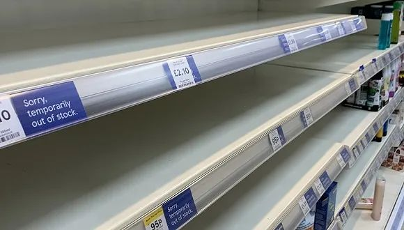
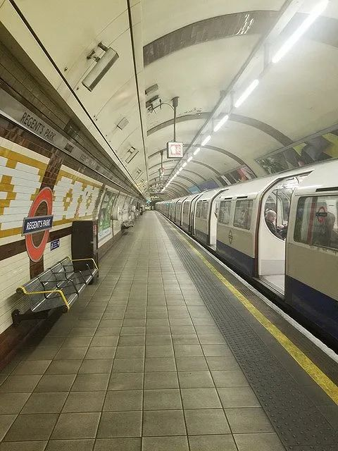

口述实录 | 万里回国后，同航班有人被确诊新冠……
原文链接 备份链接 这次疫情，也让我对祖国有了更深刻的认同，突发事件面前，我们国家的组织调配能力是一流的。 记者 | 沈 林 受访人 | 胡晓琳 最近很多在海外的同胞们都在纠结一个问题：非常时期，到底应不应该回国？或许我的经验可以给他们 …

中午时分伦敦Tesco超市的牙膏架 拍摄：高山清
记者：田思奇 王磬 编辑：曾宇
“
直到登机，一些被迫回国的同学仍在犹豫是走是留。落地后的检疫和隔离安排很细致，不少同学表示不想连累家人，即便没有强制政策，也会申请集中隔离。
”
进入3月以来，新冠肺炎疫情在中国国内持稳向好，而全球多国却呈现蔓延扩大之势。不少国家学校开始停课、现场教学取消、防护物资紧俏，一些孤身滞留海外的中国留学生，在“走”与“留”之间艰难取舍。
国外疫情如何？学校防控怎样？是什么让他们下定决心回国？机场和航班上什么状况？落地后国内检疫和隔离如何安排？这是三位留学生讲述的回家故事。
“很重要的一个信号是酒精都买不到了，我就感觉不太好了。”
——Yao，美国匹兹堡大学在读博士研究生。行程：3月13日乘达美航空从匹兹堡到温哥华后，转乘四川航空降落成都。3月15日起集中隔离14天。
3月2日这周，学校最早的防控措施是从电梯等公共空间增加免洗洗手液开始的。
“3月9日学校开始放春假，11日左右宣布要上网课，很可能持续到学期结束。图书馆还开，有些学生还住在宿舍。”在匹兹堡大学读博的Yao同学对界面新闻说。
离开美国前，他没戴过口罩，路上戴的也大多是亚洲人。临走前去超市，食物供应还充足，但没有卫生纸，口罩和洗手液更是“从没买到过”。“早先中国国内疫情爆发时，很多华人买下口罩寄回国，好在自己备下了一些。”他说。
Yao在3月9日买了13日的机票，从匹兹堡到温哥华再到成都，总共800美元。“直到登机前我还犹豫是不是要回来，”他说，“但很重要的一个信号是酒精买不到了。先是口罩，然后是免洗洗手液，临走前酒精也买不到，我就感觉不太好了。”
“美国的疫情发展不很明朗。回来时中国疫情已经很明显得到控制，美国才刚开始。”Yao课业压力不大，只需和老师保持沟通。一些人不回国是因为担心路上危险，但也有人心大。“我也劝过一些人回国，对方回答是：我回国了那我养的老鼠怎么办？”
回来的飞机上人们全程戴口罩——国内航空公司不戴口罩不能上飞机，“四川航空看你没有，会给你发口罩”。
落地后，疾控中心的工作人员拿着名单登机，叫走了名单上所有的人。
“后来我知道那些是来自疫情重点国家的人，需要集中隔离，不在名单上的就是居家隔离。当时对重点国家的定义是意大利、韩国、日本、伊朗和美国，只要此前14天去过其中一个就算，但定义和政策都是随疫情变化的。”他说。
Yao也是来自“疫情重点国家”的入境人员。下飞机后，他跟着工作人员指引，测体温后入住酒店。Yao说，他这批隔离是免费的，但即使没有强制集中隔离，他也会找地方自己隔离起来，不去连累家人，让他们麻烦。
“三位工作人员在家门口等我，感觉很隆重。”
——刘明（化名），南京大学法语系学生，在法国里尔政治学院交换。行程：3月14日乘东方航空从巴黎直飞上海。3月15日经统一安排回到南京，开始在家隔离。
3月14日的戴高乐机场还不拥挤，流量如同往常。自1月17日春季学期开学还不到两个月，刘明又从法国回到了中国。
3月初的法国疫情已经比较严重，有人拿意大利的上升曲线对比后估计，法国确诊病例在本周末（3月21-22日）就会上万。
“那时就等着政府是不是宣布停课，不停课我就不买机票，不然走了会放弃学分。”在法国里尔政治学院交换学习的刘明对界面新闻说。
3月12日晚上，在看到马克龙在直播讲话中宣布停课后，刘明马上动手买票。
“那时比平常稍贵一点，东航直达上海的经济舱人民币22000元一张。如果是商务舱要6、7万。在法兰克福转机是10000元，在莫斯科转机是5000到6000元。”他觉得转机不安全，就买了直航。
“我是交换生，本来就要回国。有些人拿着外国国籍或者永居，生了病才回国，这跟我情况不一样。”他说。“我有朋友之前就回去了，他们觉得学分和成绩不重要，而我是不想补修。”
为防传染风险，航空公司要求飞机上全程无接触。空乘都戴了口罩和护目镜，会把餐食提前送到座位上。“飞机其实没坐满，我全程戴口罩，”刘明说，“机上绝大多数是中国人，外国人也戴了口罩。不过在巴黎机场只有10%的人戴。”
航班在3月15日早6点降落浦东机场，而乘客出机场已快8点。每个人下飞机都要接受非常仔细的检疫。“先是伊朗和意大利的旅客下去，然后是被报到名字的人，可能是有接触史，然后就是一批一批下，每批大概20人。”
据刘明介绍，下飞机前人们都要填两张表，一张回答有没有去过高危地区、有没有症状、家在哪里；另一张是健康表。“填好后会给你一个码，有ABCD四种码，我的码是绿色的。跟我一起下来的人都是绿色的，需要全程把健康码举着。”
下飞机后，在问询的地方，有绿色健康码的人可以通过，这片区域会有人问“是不是去过意大利、伊朗，之前的行程怎样”。“他们告诉你不能瞒报，否则要受法律制裁。要相信上海的医疗，如有症状如实报，在这里治疗很放心。”刘明回忆说。
虽然没有症状，但由于是从疫区回来，刘明还是被贴上了一个黄标签。之后，人们上交出入境表格，登记护照号和姓名，拿完行李后，在各地安排接收的区域，江苏和浙江的工作人员已在等候。来自江苏的刘明在收到江苏省发的另一张表后，坐上了江苏的专车，从上海机场转移到苏州昆山，一车20个人。
抵达花神会展中心后，江苏13市每个市都设有区域和专车。刘明坐到南京仙灵，人们下车后再按家庭住址等候各区的专车。
“雨花台区来接我的是非急救转运医疗车，会直接把人送到家门口，”刘明说，“在家门口等我的是社区工作人员、社区医生、社区民警，三个人，感觉很隆重。对我态度很好，只是为了接我一个人，‘全副武装’。”
三位工作人员跟刘明交代了注意事项、测了体温，四个人建了微信群，要求刘明每天按时汇报情况。“他们告诉我居家隔离14天法律依据是什么，协议（承诺）书上签字。家门口装了摄像头，监督你有没有出门。给了我一个包，里面是有关隔离规定的解释，发了口罩、84消毒水、水银温度计，每天上午下午都要测。”
刘明表示，检疫、回家和隔离一切都安排得很好。除了居家隔离也有别的选择，可以去酒店住，政府也会给安排，但是要自费。“我家现在只我一个人。因为我回来了，我妈就去跟爷爷奶奶住了。如果她也在，就是两个人都要隔离。”

3月15日下午，伦敦空旷的Regents Park Station 拍摄：韦丽婷
“一位同学本想留在英国找工作，也纠结，如果回国就直飞，但直飞广州要19000元，最后还是留下了。”
——刘慧妍，伦敦政治经济学院（LSE）研究生。预期行程：3月19日乘新加坡航空从伦敦经新加坡转机回北京。集中隔离14天。
“疫情爆发前我本来也是打算3月底回来，在国内写论文同时实习。不过最近接到了实习offer，再考虑到英国和欧洲这边的疫情发展趋势，我就把回国日期提前了。”在伦敦政治经济学院攻读硕士的刘慧妍对界面新闻说。
据刘慧妍介绍，英国一年制硕士有三个学期，第一学期从9月到12月，第二学期从1月到4月初，5月到8月是没有课的夏季学期，用来写论文。
“我在3月11日左右买的伦敦-新加坡-北京的新航航班，票价大概人民币4600多元。同一行程比我买得晚的同学有人花了6000多。现在想买中转票估计都买不到了，直飞估计也不行，直飞大都是国航，而国航取消了很多航班。”她说。
决定回国后，刘慧妍先后加了三个微信群：一个LSE回北京的群，一个新加坡转机回北京群，还有一个同航班的群，群里有四五十人，大部分看上去是中国人。“我打算飞机上全程戴口罩，还和别人拼购了护目镜，不过飞机上可能会换成眼罩。”
“买票的时候北京还没有入境人员集中隔离14天的政策，但有了这个政策大家也不会取消行程，”她说，事实上，“‘回北京群’里很多人本身都想申请集中隔离，因为居家隔离的话全家人都要隔离。”
包括奥地利和法国同学在内，其他国家的同学也回家了。刘慧妍说，很多美国同学是赶在美国对英国旅行禁令生效前加急回国的。
刘慧妍同宿舍的两个中国同学打算留在英国，继续上网课写论文直到毕业。其中一位本来也是想留在英国找工作，同时考虑到坐飞机或转机风险也不小。“同学之前也纠结，如果要回国就直飞，但直飞广州票价要19000元，最后还是决定留下了。”
刘慧妍的表姐在法国读书，也想回国，但航班在3月15日取消。“她本来试着买泰国转机的票，但泰国不给中国护照持有者办过境签，她想买的票又是必须入境取行李再出境，所以现在已经放弃了，做好了留在巴黎的准备。那边戴口罩的人也很少。”她说。
近日网上流传消息称，飞往北京的国际航班将被分流到周边城市的机场，旅客在完成检疫后再飞北京。天津机场工作人员对界面新闻确认，已接到通知，但尚未通知哪些航班将采取这种方式。刘慧妍3月18日表示，当时航班信息还没显示有变化。
至于英国的疫情和学校的应对措施，她说，“学校在3月12日发通知要开始上网课，统一说法是3月23日开始，不过具体看每个学院安排，我们学院这周就开始。但校园没有关闭，宿舍、图书馆都没关门，3月13日去学校看到餐厅也没关。”
“我们接收消息一般看BBC比较快，学校反应特别慢。比如一周多以前很多同学就发邮件问是不是改成网上授课，学校过了一周才回复，说一直在商讨。首相约翰逊的讲话之后学校也没说什么，都靠大家自己看新闻。”她说。
两周前，刘慧妍在3月初就觉得英国疫情有些严重，从上周开始每天戴口罩。“我在当地买了30个一次性医用口罩，花了人民币250多元。这边很多人说戴口罩主要是防止自己生病后传染给别人，但我看街上咳嗽打喷嚏的人也没戴，所以觉得不行，我还是得保护好自己。”
刘慧妍说，3月份之前大家对戴口罩有些担心，直到3月初还有新加坡人因为戴口罩在英国被打的事发生，但后来大家觉得这种情况是少数，问题不大。“有人如果要骂我的话，没事，我自己保护好自己就行”。不过目前主要还是亚洲人戴，她说，偶尔能碰到一两个白人戴，但大部分不戴。
除了当地人不戴的情况，口罩也很难买。“亚马逊买不到，eBay有但送货特别慢，很多质量也很差。”刘慧妍说，此外，“卫生纸是真的买不到，特别夸张。食物还好，但是中国超市的水饺和米之类的供货会很慢。”
不少中国学生认为英国防控措施太松，“不靠谱”。刘慧妍说，在欧洲其他国家疫情那么严重的时候，英国政府是这样的说辞、没有显得很紧张，那英国当地民众肯定更不紧张。“本来就没人做防护，这样一说更没人关心了。”
“我觉得英国学生心挺大的，听伦敦国王学院（KCL）的朋友说，他们系有两个英国学生在群里说，‘今天大家一起去上课吧，this will be fun（这肯定很有意思）’。”
未经授权 禁止转载

原文链接 备份链接 这次疫情，也让我对祖国有了更深刻的认同，突发事件面前，我们国家的组织调配能力是一流的。 记者 | 沈 林 受访人 | 胡晓琳 最近很多在海外的同胞们都在纠结一个问题：非常时期，到底应不应该回国？或许我的经验可以给他们 …
原文链接 备份链接 去年9月刚入学伦敦大学学院(ucl)的大一学生黄嘉琪（化名）没有想到，自己成年后遇到最大的困难是新冠肺炎。 今年1月初，黄嘉琪从伦敦飞回国，准备度过入学以来的第一个圣诞假期，为了1月下旬准时入学，她提前买好了回伦敦的机 …
原文链接 备份链接 【财新网】（实习记者 纪思琪）身在纽约市，终于感受到疫情来临。校长Lee Bollinger的邮件在3月8日晚上8点41分发出，哥伦比亚大学因为新冠病毒停课了。 停课的决定来自于一个有Covid-19暴露史的人。校长在 …
原文链接 备份链接 “ 我妈见我脸色不对，接过电话一听，她也慌了，只知道对那边重复道：”她还只是个孩子，她什么都不知道。” —全民故事计划的第436个故事 — 一 2020年2月5号，我被隔离的第五天。 如果接下来 …
原文链接 备份链接 《小酒馆》，是燃财经旗下的故事栏目，真人真事，讲述创新经济时代的人生百态。本文为第35期。 作者 | 金玙璠 孟亚娜 陈琪 编辑 | 魏佳 “新冠疫情，中国打上半场，世界打下半场，华人留学生打全场”。这虽然是一句调侃， …